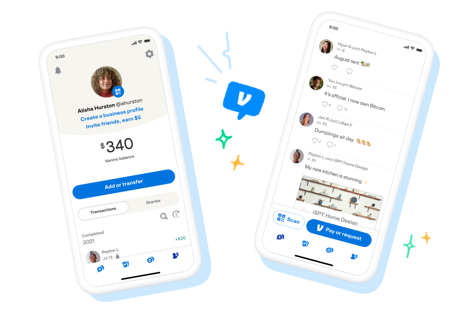
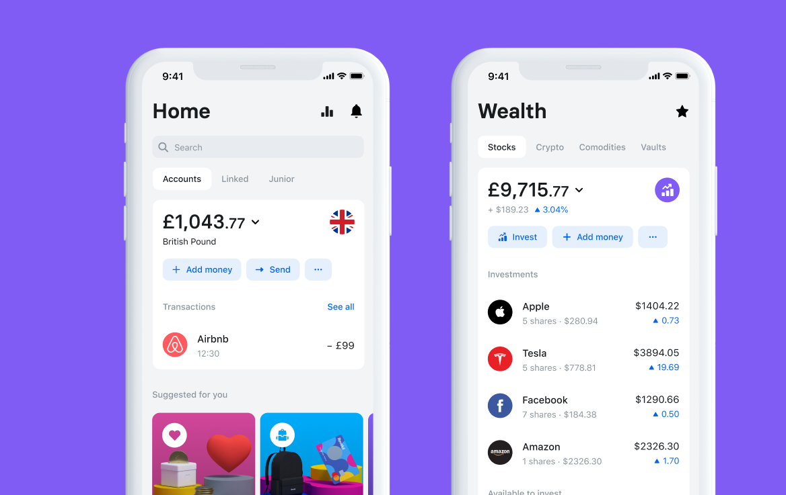
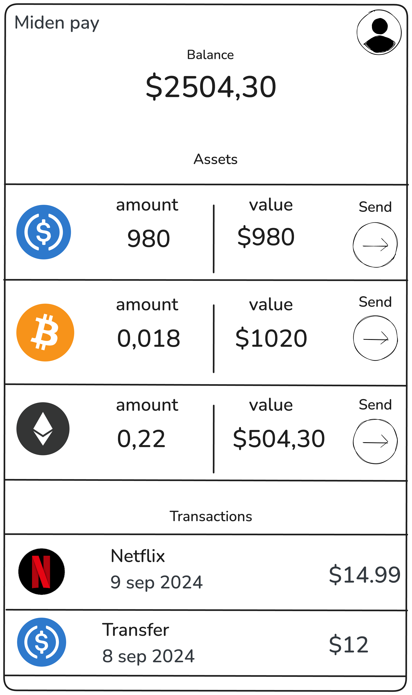

Private Payment

The why?
Introduction
Efficient payments are a backbone of human societies. They enable exchange of value for goods and services, facilitate social functioning (participating in activities e.g. going to the restaurant), and support economic growth; without them, commerce would grind to a halt, financial stability would be undermined, and access to essential services would be severely limited, potentially leading to economic stagnation and social disruption.
Blockchains as a Payments Infrastructure
Since the very first blockchain, Bitcoin, payments have been the flagship use case. With further developments like Ethereum and alternative L1's (Polygon, Tron, Near) and innovations like rollups (Base, Starknet, Scroll), payments have been made faster, cheaper, and more powerful (with additional functionalities e.g. through smart contracts).
| Blockchain | Bitcoin | Ethereum | Polygon | Base |
|---|---|---|---|---|
| Avg. tx fee ($) | 0.68 | 1.85 | 0.003 | 0.00005 |
| Cost | High | High | Low | Virtually free |
| Speed | Low | Low | High | High |
| UX | Poor | Poor | Poor | Average |
| Network | Decentralized | Decentralized | Less decentralized | Centralized |
| Privacy | None | None | None | None |
Nonetheless, for years blockchain payments have remained expensive (especially at the base layers e.g. Bitcoin, Ethereum), complex to make due to bad UX, and lack essential functionalities like privacy. This has prevented blockchains from acquiring the role of leading payment infrastructure and forced users to continue relying on classical centralized infrastructures (e.g. Visa, Mastercard, PayPal, Venmo, Revolut, Banks, etc.).
The Importance of Privacy in Payments
Privacy in payment systems is crucial for protecting individual freedoms, maintaining financial autonomy, and ensuring the healthy functioning of economies. Different payment infrastructures offer varying levels of privacy:
-
Traditional Banking Systems:
- Users have privacy from other users
- No privacy from the bank/operator
- No privacy from the government
-
Current Decentralized Systems (e.g., public blockchains):
- No privacy from other users (transactions are visible)
- No privacy from network operators/validators
- Pseudonymity ≠ Privacy (transactions can often be linked to identities)
-
Implications of Limited Privacy:
- Chilling effect on transactions: Users may avoid certain purchases or donations
- Financial surveillance: Governments or corporations can track spending habits
- Discrimination: Transaction history could be used for unfair treatment
- Security risks: Visible wealth or spending patterns may attract criminals
This lack of privacy hinders the freedom of users, who may restrain from transacting because of the trace they could leave in the system.
- Ideal Privacy in Payments:
- Transactional details visible only to involved parties
- Protection against both external observers and system operators
- Ability to selectively disclose information for regulatory compliance
Privacy-preserving payment systems empower users to transact freely without fear of surveillance or judgment, fostering a more open and innovative economy.
What about current private decentralized systems?
We already have existing decentralized privacy preserving protocols as of time of writing, being Zcash and Monero, hence why would we need other systems?:
- Lack of stable assets
Zcash and Monero respectively and exclusively use the ZEC and XMR tokens meaning that widely used stablecoins like USDC, USDT and others can't be ported and used on such blockchains. The lack of stable assets pegged to an existing currency hinders the ability of users to pay and get paid for "real world" goods and services, hence preventing those systems from becoming widely adopted payment solutions and replacing current payments infrastructure.
- Expensive payments
The average transaction fee of these blockchains as of time of writing is:
- On Zcash: $0.023
- On Monero: $0.061
Although being a few cents these transaction fees are still too high by orders of magnitude to compete with classical payment systems or existing blockchain rollups, pushing the average user to transact on those systems.
- Lack of programmability
Zcash and Monero are blockchains focused on payments, they do not provide a virtual machine enabling computation like Ethereum. This lack of programmability prevents the innovations that we have seen throuhgout the years with the development of smart contracts and other protocols making payments more efficient and powerful.
- Bad user experience
Most payments for general purpose blockchains must be made through browser wallets or cold wallet interfaces, which do not provide a compelling user interface and experience compared to existing banking apps like Venmo, Paypal or Revolut. It is nonetheless important to note that attempts have been made e.g. Zashi.
I believe that Miden can solve these issues, let me show you how.
The how?
Miden an improved payments infrastructure
Given the limitations of existing blockchains and payments infrastructure, both public and privacy-focused, there is a clear need for a solution that combines privacy, efficiency and functionality. This is where Miden enters the picture, by building on the foundational work around privacy of projects like Zcash and Monero and around computation of a project like Ethereum, while also incorporating lessons learned from scalable solutions like rollups, Miden presents a promising approach towards building a more ideal payments infrastructure.
The Miden protocol gives us the best of all worlds by addressing each of the key issues identified in current systems:
| Aspect | Current Systems | Miden |
|---|---|---|
| Network Structure | Centralized | Decentralized (On the roadmap) |
| Asset Support | Lack of stable assets | Arbitrary assets |
| Programmability | Lack of programmability | Turing complete VM |
| Privacy | Public | Private |
| Cost | Expensive | Cheap |
| Speed | Slow | Fast |
| User Experience | Poor UX | Abstracted UX (Applications) |
The Miden protocol
Peer-to-peer private transfers
Miden enables users to perform peer-to-peer private transfers using local execution and local proving, here is an example of it step by step:
We agree on the following initial state:
- There are 2 users Alice and Bob
- Alice owns 1 Ether, Bob owns no assets
- Alice wants to send her 1 Ether to Bob
- Alice and Bob want to remain private
To do so the following scheme can be applied:
-
Alice transitions her state from a state
Swhere she has1 Etherto a stateS'where she has0 Ethertransferring the asset into aNoteusing the P2ID script. -
Alice transfers this
Notecontaining the asset to Bob using arbitrary solutions (On-chain encrypted notes (on the roadmap), Telegram, Signal, etc.) -
Bob receives the
Noteand transitions his state fromSwhere he has0 Etherto a stateS'where he has1 Etherconsuming the1 Etherplaced into theNoteby Alice into his state.
Account abstraction
Ethereum has set the standard for accounts in the VM enabled blockchain world. There are two types of accounts in Ethereum:
- Externally owned accounts (EOA): are created by generating a public/private ECDSA key pair. Does not hold code. can initiate transactions.
- Contract accounts (Smart contracts): are created by being deployed on the Ethereum blockchain by an EOA. Holds code which can be executed. can't initiate transactions.
We clearly understand here that Ethereum has made the choice to separate user accounts from executable code. What if we could merge both to enable programmable user accounts? Welcoming Account abstraction, which can be defined as follows:
"Account abstraction is a method of setting up a blockchain network in which users’ assets are stored exclusively in smart contracts, and not in external accounts (External Owned Accounts, EOAs). When using this approach, a crypto wallet turns into a unique smart contract that can be programmed for various purposes."
What is account abstraction and why is it important - Medium - Aleksander
Miden supports full account abstraction enabling full programmability of user accounts defined as follows:

The Miden VM code field hints that all Miden accounts are abstracted which enables arbitrary logic to be executed against them, opening the door to unbounded functionalities. Using this innovations we can imagine improvements in UX like social recovery, abstracted seed phrases, Face-ID signing, and many more.
Privacy scales better
At Miden we believe that privacy scales better! Using local execution and local proving the computation is pushed at the edges of the system. Users would execute and prove their own state transitions directly on-device which means that the node operators do not need to handle and charge for complex computation hence making the blockchain faster and cheaper for users. This scheme firstly enables privacy considering that no private data leaves the users device and secondly makes the use of the blockchain cheaper for the user.
In this section we covered privacy through peer-to-peer private transfers, improvements in UX through account abstraction and lastly fast and cheap transactions through privacy enabling better scaling.
The vision
A powerful payment application on Miden
Leveraging the Miden primitives mentioned above we can imagine a powerful payment application that would combine privacy, fast and cheap payments, a stunning user interface, great user experience while being built on top of a fully permissionless and decentralized infrastructure, Miden.
The following features would be required:
- A modern, simple and clean frontend
- Ability to make transfers in a fast, cheap and privacy preserving way
- Ability to create accounts with a simple onboarding flow (abstracted seed phrases)
- Built on top of Miden
The frontend
Taking inspiration on successful current payments apps we would prioritise simplicity and cleanliness for the interface making the application approachable for users with any technical level.
Venmo: 
Revolut: 
We can imagine a frontend that would aggregate all user assets and transfers, display a portfolio value and enable transfers:

The backend
Making private transfers
Question: How can the application developer use Miden to make private transfers?
Using the Miden SDK or the Miden client an application developer can import Miden core components into his application enabling him to create accounts, use the Miden VM to make state transitions (transactions) and generate notes, Miden prover to make proofs and preserve privacy, and more.
Account storage
The user account, assets and private key would be stored securely on device. For additional redundancy we could add social recovery solutions, storage of an encrypted account state in the cloud, and more.
Secure enclave and Keystore
Question: I don't really know what I private key is and it seems too important for me to store it safely, how can I do?
To make the user onboarding seemless we would want to abstract away seed phrases and complex blockchain security measures. We could achieve this using the secure element of modern phones which stores key-pairs in trusted execution environements (TEE's) enabling signatures. They are currently used for face or finger recognition, login, Webauthn, payment and more:
- Secure enclave for Apple phones
- Keystore for Android phones
To leverage these secure elements in Miden we would need to implement signature verification for their supported signature schemes. A signature scheme supported by both of these secure elements is ECDSA, ECDSA signature verification support on Miden would enable users to sign miden transaction using their phones face / finger recognition, password, etc. making the onboarding flow simpler.
The relayer
Question: Considering that the transactions are made locally by the users how would notes be handled and delivered to the recipients?
Relaying could be handled in different ways:
- Off-chain relaying: the application or external actors could provide relaying services for the notes of the users (loosing privacy against the relayer)
- On-chain relaying: the users could use on-chain encrypted notes to interact with other users (on the roadmap)
The first method could be assimilated with a PUSH scheme where the source would send his notes to the relayer and the relayer would send those notes to the intended target. The second method could be assimilated as a PULL scheme where the source would encrypt notes and send them to the Miden rollup. The application would then need to filter existing notes from the rollup notes tree and consume relevant notes for the target user (which could be done on action or time basis).
Miden name service
Question: How would I easily find and interact with my contacts if addresses are a bunch of random characters startin with 0x?
To simplify the addition and management of contacts and make the experience more recognizable by web2 users we could improve the address book of the application by leveraging Miden name service. A name service is essential for users to easily find, send and remember contacts (We do store phone numbers as numbers in our phones, we store them as names, attached is the phone number e.g. Mom -> +123456789).
Users need to sign a transaction for each action
Question: Wouldn't I have a bad experience needing to sign each and every action I make inside the application?
Most web3 apps forced their users to sign a transaction for each of their actions because each state update of a blockchain requires a valid account signature, we can solve this using these two solutions:
- Batching of user actions: User actions can be batched and do not need to be sent on each action.
- Hybrid web2 / web3 apps: Not everything needs to live on-chain, the application developer can handle some of the actions on a classible web2 backend, while the userkeep sovereignty over their assets and data in a web3 way
What about fees?
Question: Wouldn't I need to pay a lot in fees for each transaction?
Any digital system incurs costs be it centralized or decentralized. The cost of the material, running the software, employees, offices, etc. The default behaviour for web2 applications is to subsidise these costs for their users making the use of the service free and finding other ways to make profit. Current blockchains (web3) impose gas fees to their users relative to their computational use of the system. This payment of fees on each action has made the user experience and the cost to use blockchain systems higher than their web2 counterparts, hindering the adoption of blockchain based applications.
Miden's account abstraction solves this by enabling application developers to subsidise gas costs for their users through a paymaster scheme. Furthermore the cost incurred by fees on Miden would be small thanks to private scaling.
Additional features
We could imagine additional features which could be added to this type of application:
- Simple defi page, aggregating best sources of yield / lending / borrowing from different Miden protocols
- Creation of digital bank cards and integration with Apple / Google pay
- Creation of physical bank cards (Gnosis card, Crypto.com card, etc.)
Conclusion
Miden represents a significant leap forward in blockchain-based payment systems, addressing key limitations of existing solutions. By combining privacy, programmability, and scalability, it opens the door to user-friendly applications that could revolutionize how we transact, as presented above.